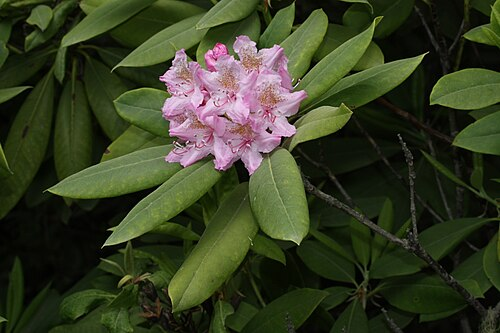

Scientific Name
Rhododendron macrophyllum
Common Names
Pacific rhododendron, coast rhododendron, bigleaf rhododendron
Size
Usually around 6 to 12 feet tall, but can get up to about 20 feet.
Geographic Range
West coast of North America, especially Washington and Oregon, plus parts of California and British Columbia.
Climate
Does best in mild and wet climates, often in forests and coastal/mountain areas with cooler temps.